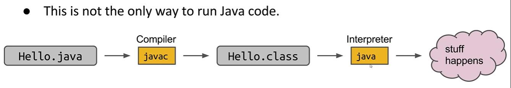

Compilation
public class HelloWorld public static double larger (double x,double y) if (x>y){ return x; } return y; } public static void main (String[] args) double x = 1.0 ; double y = 1.1 ; System.out.println("Hello World!" ); System.out.println(larger(x,y)); } }
How can I run a Java code?
(c means a compiler)
then I can
first javac, and then java.

Why make a CLASS file?
Type Checked can make distributed code safer
Simplicity for machine to execute and makes distributed code faster
Security to protect one’s intellectual property
Define and Instantiating Classes
Every file must have a class
To run a class, we must define a main method
When programming with more than 2 files, we should carefully avoid static to prevent variable we need from declaring “private”
public class Dog public int weightInPounds; public Dog (int w) weightInPounds=w; } public void makeNoise () if (weightInPounds<10 ){ System.out.println("yip!" ); }else if (weightInPounds < 30 ){ System.out.println("bark." ); }else { System.out.println("woof!" ); } } }
public class DogLauncher public static void main (String[] args) Dog d=new Dog(30 ); d.makeNoise(); } }
And we can state a Constructor method just like we use in cpp like the above instead of using the THIS pointer:
public Dog (int w) weightInPounds=w; }
for now I just do want to make some mods in Java for Minecraft…
Terminology
Instance Variable
Constructor: just like we use in CPP class
Non-static method: you CAN NOT access an instance variable from a static context
Declaration
Instantiation
Assignment
Invocation
Arrays of Objects
Dog[] dogs = new Dog[2 ]; dogs[0 ] = new Dog(8 ); dogs[1 ] = new Dog(20 ); dogs[0 ].makeNoise();
Static vs. Non-static
Static variables or methods can be invoked by the class name
while Non-static variables or methods can only be invoked by the object name
public class Dog public int weightInPounds; public Dog (int w) weightInPounds=w; } public void makeNoise () if (weightInPounds<10 ){ System.out.println("yip!" ); }else if (weightInPounds < 30 ){ System.out.println("bark." ); }else { System.out.println("woof!" ); } } public static Dog maxDog (Dog d1,Dog d2) if (d1.weightInPounds> d2.weightInPounds){ return d1; } return d2; } public Dog maxDog (Dog d2) if (this .weightInPounds>d2.weightInPounds){ return this ; } return d2; } }
public class DogLauncher public static void main (String[] args) Dog d=new Dog(10 ); Dog d2 = new Dog(100 ); Dog bigger=d.maxDog(d2); d.makeNoise(); bigger.makeNoise(); } }
Managing Complexity with Classes and Static Methods
To take choices away from the programmer
LargerThanFourNeighbors
No Helper Methods
package lec2;public class DogProblem public static Dog[] largerThanFourNeighbors(Dog[] dogs){ for (int i=0 ;i<dogs.length;i++){ boolean largest = true ; for (int j=-2 ;j<=2 ;j++){ if (i+j<0 ){ continue ; } if (i+j>=dogs.length){ break ; } if (j == 0 ){ continue ; } Dog neighborDog=dogs[i+j]; if (neighborDog.weightInPounds>=dogs[i].weightInPounds){ largest = false ; } } } } }
Helper Methods
package lec2;import javax.naming.PartialResultException;public class DogProblem public static Dog[] largerThanFourNeighbors(Dog[] dogs){ Dog[] returnDogs = new Dog[dogs.length]; int cnt = 0 ; for (int i = 0 ;i < dogs.length; i++){ if (isBiggestOfFour(dogs,i)){ returnDogs[cnt]=dogs[i]; cnt++; } } returnDogs = arrayWithNoNulls(returnDogs,cnt); return returnDogs; } public static Dog[] arrayWithNoNulls(Dog[] dogs,int cnt){ Dog[] noNullDogs = new Dog[cnt]; for (int i = 0 ;i < cnt;i++){ noNullDogs[i] = dogs[i]; } return noNullDogs; } public static boolean isBiggestOfFour (Dog []dogs, int i) boolean isBiggest = true ; for (int j = -2 ; j <= 2 ; j++){ int compareIndex = i + j; if (j == 0 ){ continue ; } if (validIndex(dogs,compareIndex)){ if (dogs[compareIndex].weightInPounds >= dogs[i].weightInPounds){ isBiggest = false ; } } } return isBiggest; } public static boolean validIndex (Dog[] dogs, int i) if (i < 0 || i >= dogs.length){ return false ; } return true ; } public static void main (String[] args) Dog[] dogs ={ new Dog(10 ), new Dog(15 ), new Dog(20 ), new Dog(15 ), new Dog(10 ), new Dog(5 ), new Dog(10 ), new Dog(15 ), new Dog(22 ), new Dog(20 ), }; Dog[] sol = largerThanFourNeighbors(dogs); for (int i = 0 ;i < sol.length;i++){ System.out.println(sol[i].weightInPounds); } } }